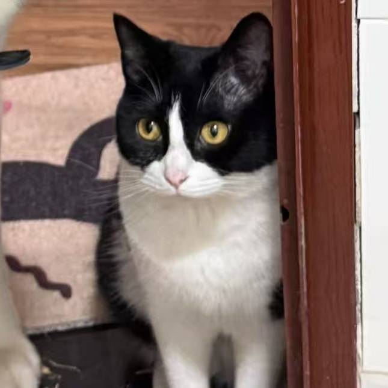

郑雨杭
大家好，我叫郑雨杭，来自中国湖北，目前就读北京理工大学软件工程专业。
从小家里吸引我的东西就只有两个，一个是电脑，一个是电钢。于是，我怀揣着对音乐和编程的热爱，同时在这两条道路上探索与成长。我坚持着音乐方面的长期系统训练，并不断学习乐理知识，最懂得如何用声音传递情感与知识。
上大学之后，我开始学习更进阶的编程：例如C语言、C++、Python和Javascript。借由这些知识，我与联创小组的三位共同开发这个MusicLab网站。从前就在网上看到此类音乐学习或创作网站，但是大多数都涉及版权、收费、功能不齐全等问题，而市面上的音乐软件大多也需要很长的时间去学习。
于是这个idea被催生了，我希望用我现有的乐理知识和编程能力创建一个更适合大众学习创作的音乐网站，在这个过程中，我负责项目牵头和主要的内容编写，得益于小组中其他同学的协助，我们正在把这个项目从0做到美满。虽然我的知识面还没有达到一定程度，html+Css+java也是边学边写，但经过这次的项目，我可以逐渐掌握网站开发的流程与方法。这个网站我也会一直做下去，以后希望能做出更好的网站。
← 返回开发组介绍